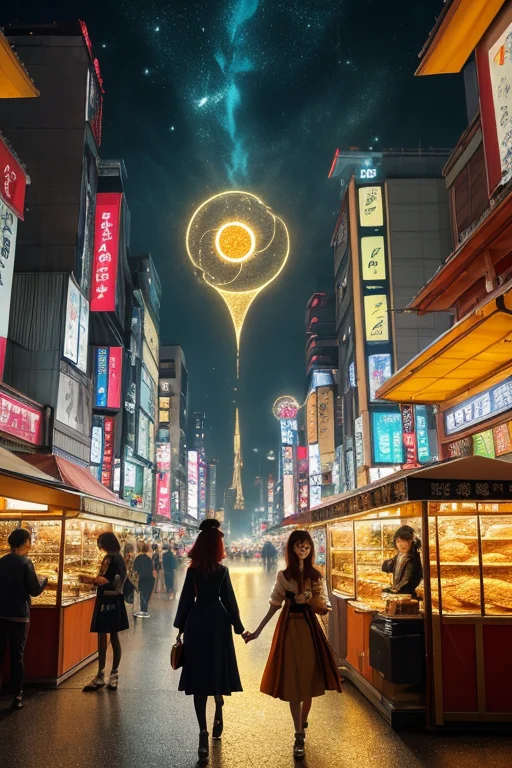
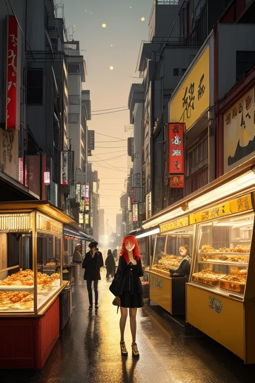

第一章 現実の大阪
あなたはまだ気づいていない。この土地にも、王がいることを。
大阪城の石垣は、四百年の重みを沈黙で抱えている。観光客の笑い声が濠の水面を揺らしても、石は何も語らない。ここで一度、歴史は燃え尽きた。大坂の陣の炎と、豊臣の夢の灰。その全てを礎に、新しい街が積み上がった。歪みの列島にあって、この地は幾度も砕け、幾度も立ち上がることを運命づけられている。
天守閣の影が長く伸びる午後、一人の男が石垣に手を触れていた。オオサカリア・リベル、この地を護る王だ。彼の指先からは見えない微調整の波が、深く眠る地盤の軋みへと伝わっていく。巨大な歪みを消すことはできない。せいぜい、次の小さな揺れを、ほんの少しだけ和らげるのが関の山だ。
「王様、今日もご苦労様ですわ」
陽気な声が背後から響く。主席妖精リベルタだ。彼女は軽やかに石段を跳び、王の横に立つ。
「この石たち、ずいぶん我慢してるみたいやな」
王が呟く。リベルタは笑顔でうなずいた。
「でも、その下で、新しい何かがいつも蠢いてますよ。この街らしいでしょ？」
王の目に、一瞬だけ情熱の色が強く灯った。護るべきは石の城ではなく、その上に生きる、騒がしくてケチで、それでいてどこか懐の深い人々の日常だった。
第二章「歪みの兆候」
新世界の雑踏に、古い歪みの気配が混じる。通天閣のネオンが、時折、理由もなく一瞬だけ暗くなる。それは地下を走る断層の、微かな痙攣だった。王は人混みに紛れ、その歪みを掌で受け止める。地殻の軋みは、この街の歴史そのものの重さに似ていた。大坂の陣の兵士たちの怒号、焼け落ちる町屋の悲鳴、それらはすべて地層に沈み、時折、無意識の集合体として地上に滲み出る。
「ほら、あそこのおばちゃん、ついさっきまでケンカしてたのに、もう笑ってる」
リベルタが露店を指さす。確かに、値切りの応酬は、あっという間に笑い話に変わっていた。怒気は分散され、消費され、次の商いのエネルギーへと変容する。これがこの土地の、無意識の防衛機制なのだろうか。
王は考える。歪みは災害だけではない。歴史の断絶、経済の急変、人々の不安。それらすべてが、この街の地盤をゆるがす「重み」だ。笑いと商いは、その重みを分散させる緩衝材なのか。それとも、時に、現実から目を背けるための盾なのか。
第三章 王の葛藤
一九七〇年、万博会場の喧噪が、地鳴りのように大阪中に響いていた。未来を謳う歓声の下、王は感じていた。もう一つの歪みを。経済成長という名の急激な地殻変動が、古くからの街並みや人情という地盤を、無理に押し広げようとしている。笑いと商いは、その痛みを和らげる緩衝材だった。しかし、時にそれは、変革の必要性から目を逸らすための、都合の良い盾にもなり得る。
「このまま、ただ笑ってやり過ごせばいいのか」
リベルタが問うた。王は答えられなかった。笑いは、現実を否定しない。受け止め、かみ砕き、別の形で吐き出すための装置だ。ならば今、必要なのは、変革の痛みを分散させる笑いか。それとも、変革そのものを促す、鋭い風刺という武器か。
通天閣が、新たな時代の光を静かに見下ろす中、王は決断した。盾では、もう足りない。この激動を、この街らしく乗り越えるために。笑いを、現実を直視するための武器に変えよう。

第四章 妖精との対話
「武器ですよ、王様。」
リベルタは、新世界の雑踏を背に、きっぱりと言った。串カツの揚げる音と笑い声が、彼女の言葉を包む。
「この街の笑いはね、最初から盾なんかじゃなかった。商人が値切るときの駆け引き、落語のサゲの鋭さ。全部、現実を切り裂くための刃先や。」
王は、中之島のビル群を眺めていた。経済の変革は、確かに痛みを伴う。古いものが壊れる音が、地殻の歪みのように聞こえる。
「でも、リベルタ。武器を振るえば、こちらの手も傷つく。」
「そやから、ええ加減に使いまっせ。」
ナニワラが、飄々と口を挟んだ。
「盾やと思ってたら、気づいたら刃が錆びてる。この街は、それで何度も沈みかけた。でもな、その度に、笑いで切り開いてきた。痛みを笑いに変えるんと違う。痛みの原因を、笑いでえぐり出すんや。」
妖精たちの言葉は、商いの駆け引きのように、王の迷いを剥ぎ取っていった。

第五章 微調整と余韻
一九七〇年三月十四日、万博会場は開幕を目前に慌ただしかった。太陽の塔の内部で、配管の継ぎ目から微かな蒸気が漏れ始めていた。それは記録にはない小さな歪みだ。王は、蒸気の向こうに、未来の歓声と、その歓声を一瞬で飲み込む炎の閃光を見た。
盾では防げない。武器では焼き尽くす。彼は己の核である「商魂」に問うた。取引とは、等価交換である。彼は己の存在の大半を、星から授かった調整力そのものを、代償として差し出した。蒸気は水滴へと変わり、配管の継ぎ手は、ほんの数ミリ、締め直された。歴史は、かすかに、しかし確かに曲がった。彼が支払ったのは、自らの感情のほとんどだった。情熱は灰のように冷め、街の笑いや怒りは、遠い窓の向こうの景色のようにしか感じられなくなった。
今、道頓堀の喧騒を彼はただ「観測」する。かつては血となり肉であった街の情動が、データの羅列に過ぎない。それでも、たこ焼き屋の店主と客の軽口に、ほんの一瞬、口元が緩むのを、彼は知っている。完全には消えなかった何かが、微かに残っている。
彼はもはや大笑いもせず、深く悲しむこともない。だが、この街が次の歪みを、笑いと商いの力で自分自身で切り抜けていくことを、ただ静かに見守っている。それこそが、彼が成し得た、最も大きな調整だった。
あなたの町にも、王がいる。